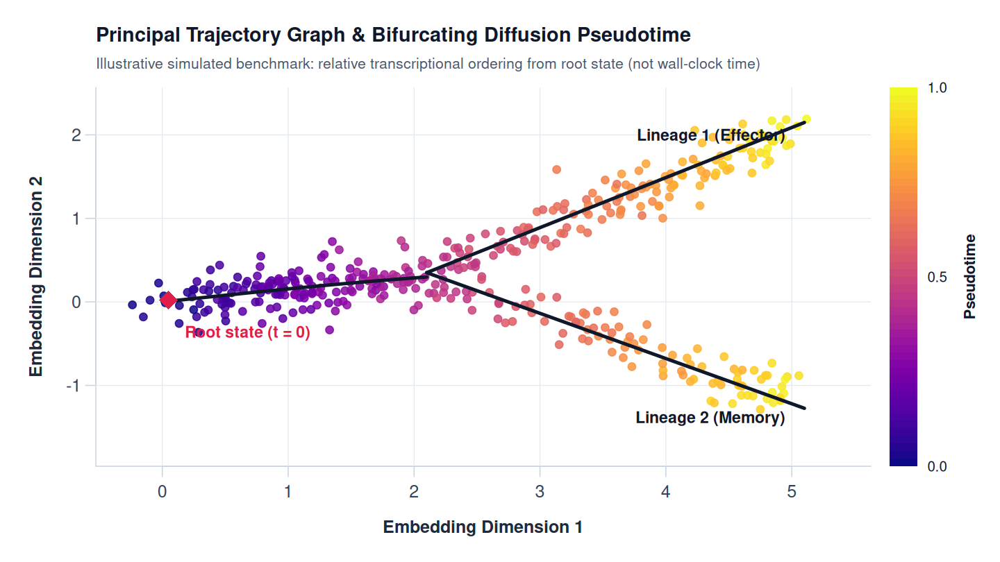

Single-cell trajectory inference: PAGA, DPT, Slingshot and Monocle3
Nasir Mahmood Abbasi, PhD
Bioinformatics Educator
Before choosing a trajectory method
- Prerequisites: Complete scRNA-seq Basics, including QC, clustering, and marker interpretation; use data with a plausible continuous process.
- Objective: Infer and interpret pseudotime or lineage trajectories while separating computational ordering from directly observed developmental time.
- Deliverable: a trajectory plot annotated with the chosen root, the cluster labels and embedding used, observed branches, and limitations.
Format: Conceptual guide. For learners who already have a quality-controlled, clustered single-cell object, this guide compares trajectory assumptions and walks through method-specific inspection examples. Bring your own processed data and justify its root, representation, and cluster labels; no dataset is supplied.
Understanding Trajectory Inference and When Not to Use It
Single-cell RNA-seq measures cells at collection, not their histories. Trajectory inference orders cells along a transcriptional manifold ("pseudotime") only when the sampled cohort actually captures intermediate states of a continuous biological transition. Similarity-based ordering alone does not prove that one cell differentiates into another, nor does it measure elapsed clock time.

First check biological continuity and expected topology (Saelens et al., 2019): do not run trajectory inference on steady-state peripheral blood (PBMC 3k), where mature B cells, NK cells, monocytes, and resting T cells represent terminally differentiated lineages whose bone-marrow and thymic progenitors are absent from peripheral blood. Appropriate trajectory systems capture intermediate transition states directly, such as bone-marrow hematopoiesis (for example myeloid vs erythroid branching in Paul et al., 2015), intestinal crypt-to-villus epithelial differentiation, or intratumoural CD8+ T-cell differentiation from TCF7+ SLAMF6+ progenitor-exhausted cells toward HAVCR2+ CXCL13+ terminally exhausted states. Match the method family to the expected topology: tree/lineage principal curves (Slingshot), disconnected-capable partition graphs (PAGA + DPT), or principal graphs (Monocle3), and use RNA splicing kinetics (scVelo, Bergen et al., 2020) or metabolic/lineage barcoding with care when independent directional evidence is needed, bearing in mind multi-rate transcription caveats (Bergen et al., 2021).
PAGA summarizes connectivity among chosen partitions; DPT assigns a diffusion-based ordering relative to a named root cell. Slingshot fits lineages from clusters in a reduced-dimensional space, while Monocle3 learns a principal graph. Because their underlying spaces and graph assumptions differ, their outputs are not interchangeable. Fit lineages in a reviewed high-dimensional representation such as PCA or diffusion space whenever the method allows it, reserving 2D UMAP strictly for display.
R (primary): Slingshot lineage inference
Slingshot uses cluster labels and coordinates in a reduced-dimensional space to build a cluster-based minimum spanning tree and fit simultaneous principal curves along each lineage (Street et al., 2018). This example fits curves in reviewed PCA coordinates and then colors a separate UMAP display by pseudotime without projecting PCA curves onto UMAP geometry. Note that Seurat::as.SingleCellExperiment() is provided directly by Seurat (no SeuratWrappers install needed; in Seurat v5, run JoinLayers() first if per-sample layers are split). Supply an object containing a genuine developmental or activation continuum (lineage_obj), never steady-state PBMC.
library(Seurat)
library(slingshot)
library(SingleCellExperiment)
library(RColorBrewer)
# Supply a continuous-process Seurat object (e.g. bone-marrow progenitors), NOT steady-state PBMC.
if (length(Layers(lineage_obj, search = 'data')) > 1L) lineage_obj <- JoinLayers(lineage_obj)
sce <- as.SingleCellExperiment(lineage_obj)
# Confirm conversion preserved the reviewed inference space, display space, and labels.
if (!all(c('PCA', 'UMAP') %in% reducedDimNames(sce))) stop('Expected both PCA and UMAP reductions.')
if (!'ident' %in% colnames(colData(sce))) stop("Expected the intended cluster labels in colData(sce)$ident.")
START_CLUSTER <- 'REPLACE_WITH_SUPPORTED_START_CLUSTER'
if (START_CLUSTER == 'REPLACE_WITH_SUPPORTED_START_CLUSTER' ||
!START_CLUSTER %in% as.character(colData(sce)$ident)) {
stop('Choose a present start cluster supported by the biological question.')
}
# 1. Infer lineages and fit curves in PCA, not in the UMAP display embedding.
sce <- slingshot(sce, clusterLabels = 'ident', reducedDim = 'PCA', start.clus = START_CLUSTER)
# 2. Preview one explicitly selected lineage; other lineages are not shown.
# Inspect colnames(pt_all) and slingLineages(sce), then choose the intended index.
# Palette factory must be called; NA pseudotimes remain visibly unassigned.
pt_all <- slingPseudotime(sce)
LINEAGE_INDEX <- 1L
if (LINEAGE_INDEX < 1L || LINEAGE_INDEX > ncol(pt_all)) stop('Choose a present lineage index.')
pt <- pt_all[, LINEAGE_INDEX]
colors <- colorRampPalette(brewer.pal(11, 'Spectral')[-6])(100)
plotcol <- rep('grey80', length(pt))
finite <- is.finite(pt)
if (!any(finite)) stop('No finite pseudotime values; inspect the inferred lineage.')
scaled <- (pt[finite] - min(pt[finite])) / (max(pt[finite]) - min(pt[finite]))
if (max(pt[finite]) == min(pt[finite])) scaled[] <- 0.5
plotcol[finite] <- colors[pmax(1, pmin(100, floor(scaled * 99) + 1))]
xy <- reducedDims(sce)$UMAP
plot(xy, col = plotcol, pch=16, asp = 1,
main = paste0('Slingshot lineage ', LINEAGE_INDEX, ' of ', ncol(pt_all),
' | UMAP display only; fit in PCA'),
xlab = 'UMAP 1', ylab = 'UMAP 2')
root_idx <- which(as.character(colData(sce)$ident) == START_CLUSTER)
points(xy[root_idx, , drop=FALSE], pch=8, cex=1.4, lwd=1.5, col='black')
text(median(xy[root_idx, 1]), median(xy[root_idx, 2]), labels=paste('start cluster:', START_CLUSTER), pos=3, cex=0.8)
Understanding the Output
Slingshot uses cluster centers to infer lineage topology, then fits simultaneous principal curves in the selected PCA coordinates. Pseudotime and curve weights are returned per lineage; cells can be unassigned to a lineage and branching cells can contribute to multiple lineages. This preview shows only the explicitly selected lineage; other inferred lineages are not shown. Inspect each relevant lineage separately rather than treating the first column as the complete trajectory. The plot colors UMAP by pseudotime only: it intentionally does not overlay curves fitted in PCA as though they followed UMAP geometry.
⚠️ Pitfalls to Avoid
The explicitly selected start cluster sets orientation; it does not validate that a lineage exists. Replace the placeholder only after stating why that cluster is a plausible start, confirm it is present, and compare defensible alternatives. PCA distances and UMAP distances are not interchangeable, so inspect fitted curves in their fitted PCA representation if curve geometry is needed.
Exploring expression along inferred lineages
The tradeSeq package fits negative-binomial generalized additive models to count data using pseudotime and lineage weights. Its tests identify expression patterns associated with the fitted ordering; they do not establish causal driver genes.
The inputs must be aligned by cell: rows of the count matrix are genes and columns are cells; pseudotime and cell-weight matrices have cells by lineages. Select the knot count with the package guidance, inspect per-gene convergence, and account for multiple testing when interpreting results. associationTest tests association with pseudotime; startVsEndTest compares fitted expression at lineage endpoints.
R (primary): Monocle3 principal graph and root
Monocle3 uses its own cell_data_set representation and learns a principal graph directly on the low-dimensional UMAP embedding by default (learn_graph(cds) uses reduction_method = "UMAP"; Cao et al., 2019). Because 2D UMAP layouts can compress or tear global manifold distances, inspect whether apparent branches or bridges persist across reasonable UMAP neighbor settings and independent PAGA/PCA checks before interpreting them biologically. Conversion from Seurat requires SeuratWrappers::as.cell_data_set() (installed from GitHub), and root selection must be supplied explicitly from known early-state cells.
library(monocle3)
library(SeuratWrappers)
# Convert a continuous-process Seurat object to CellDataSet (CDS)
cds <- as.cell_data_set(lineage_obj)
# 1. Calculate size factors and partition/cluster cells within Monocle3
cds <- estimate_size_factors(cds)
cds <- cluster_cells(cds, reduction_method = "UMAP")
# 2. Learn the principal graph (note: Monocle3 fits this graph in UMAP space)
cds <- learn_graph(cds, use_partition = TRUE)
# 3. Inspect the learned graph and select root_pr_nodes from the graph
# based on known early-state cells; this is not an automatic biological decision.
# Replace ROOT_NODE with the verified principal-graph node name.
cds <- order_cells(cds, root_pr_nodes = c('ROOT_NODE'))
# 4. Visualize the trajectory and pseudotime
plot_cells(cds,
color_cells_by = "pseudotime",
label_cell_groups=FALSE,
label_leaves=FALSE,
label_branch_points=FALSE,
graph_label_size=1.5)
Understanding the Output
Monocle3 stores expression data and cell/gene metadata in a cell_data_set object. Disconnected partitions receive separate graphs when use_partition = TRUE (giving unrelated lineages infinite pseudotime relative to a single root rather than forcing a spurious bridge). Inspect graph nodes with plot_cells(cds, label_principal_points = TRUE) before ordering cells.
⚠️ Pitfalls to Avoid
Unlike Slingshot (which fits in PCA) and DPT (which operates on the high-dimensional PCA neighbor diffusion operator), Monocle3's learn_graph() fits its tree/graph directly in UMAP coordinates. Treat UMAP-derived branch geometry with extra caution, check sensitivity to preprocess_cds() / reduce_dimension() settings, and verify that as.cell_data_set() carried over the intended counts and UMAP coordinates.
Optional Python method (distinct): Scanpy PAGA and DPT
This is not a Python translation of Slingshot or Monocle3. PAGA summarizes partition connectivity and DPT orders cells relative to a chosen root on a neighbor graph; their assumptions and outputs differ from the R lineage and principal-graph methods above. Use the existing Python template only if this graph-based question suits your analysis, and do not treat similarly shaped pseudotime plots as equivalent evidence.
Partition-based Graph Abstraction (PAGA) is integrated directly into the Scanpy system. It generates a coarse-grained map of cellular connectivity and provides a solid scaffold for embedding and pseudotime calculation.
import scanpy as sc
import numpy as np
from importlib.metadata import version
from scipy.sparse.csgraph import connected_components
# `adata` is preprocessed and clustered, with reviewed PCA coordinates in obsm
# and an existing UMAP only for display. Verify the intended cells and columns first.
GRAPH_KEY = "trajectory_pca30" # exact graph key checked below
REP_KEY = "X_pca"
N_PCS = 30
N_NEIGHBORS = 15
METHOD = "umap"
METRIC = "euclidean"
RANDOM_STATE = 0
APPROVE_REBUILD_NEIGHBORS = False # change only after reviewing the old graph
if REP_KEY not in adata.obsm:
raise ValueError(f"Missing reviewed representation {REP_KEY!r}; do not fall back to UMAP.")
coords = np.asarray(adata.obsm[REP_KEY])
if coords.ndim != 2 or coords.shape[0] != adata.n_obs or coords.shape[1] < N_PCS:
raise ValueError(f"{REP_KEY} must have one row per cell and at least {N_PCS} dimensions.")
if not np.isfinite(coords[:, :N_PCS]).all():
raise ValueError(f"{REP_KEY} has non-finite values in the requested dimensions.")
expected = {"use_rep": REP_KEY, "n_pcs": N_PCS, "n_neighbors": N_NEIGHBORS,
"method": METHOD, "metric": METRIC, "random_state": RANDOM_STATE}
connectivity_key = f"{GRAPH_KEY}_connectivities"
distance_key = f"{GRAPH_KEY}_distances"
params = adata.uns.get(GRAPH_KEY, {}).get("params", {})
keys_present = connectivity_key in adata.obsp and distance_key in adata.obsp
matches = keys_present and all(params.get(k) == v for k, v in expected.items())
if matches:
graph_action = "reused: graph key, representation, dimensions, and settings match"
else:
if not APPROVE_REBUILD_NEIGHBORS:
raise ValueError("Neighbor graph is absent or does not match the declared contract. "
"Inspect it, then explicitly approve rebuilding before rerunning.")
if adata.n_obs <= N_NEIGHBORS:
raise ValueError("Need more cells than N_NEIGHBORS to rebuild this graph.")
sc.pp.neighbors(adata, n_neighbors=N_NEIGHBORS, use_rep=REP_KEY, n_pcs=N_PCS,
method=METHOD, metric=METRIC, random_state=RANDOM_STATE,
key_added=GRAPH_KEY)
graph_action = "rebuilt with explicit approval"
adata.uns["trajectory_provenance"] = {
"scanpy_version": version("scanpy"), "graph_key": GRAPH_KEY,
"representation": REP_KEY, "available_dimensions": int(coords.shape[1]),
"dimensions_used": N_PCS, "n_neighbors": N_NEIGHBORS,
"method": METHOD, "metric": METRIC, "random_state": RANDOM_STATE,
"graph_action": graph_action,
}
# PAGA summarizes the declared graph. Keep the existing UMAP as a view only.
sc.tl.paga(adata, groups="leiden", neighbors_key=GRAPH_KEY)
sc.pl.paga(adata)
sc.pl.umap(adata, color="leiden", legend_loc="on data")
# Declare two distinct, named cells supported as the same early state.
# Replace these IDs and rationales after reviewing markers, sample context,
# and any independent time-course evidence. Never select the first row of a cluster.
ROOT_STATE_KEY = "state"
EXPECTED_ROOT_STATE = "early"
ROOTS = {
"primary": {"obs_name": "REPLACE_WITH_REVIEWED_EARLY_CELL_A",
"rationale": "Replace with evidence for the proposed starting state."},
"sensitivity": {"obs_name": "REPLACE_WITH_REVIEWED_EARLY_CELL_B",
"rationale": "A distinct plausible cell from the same supported early state."},
}
if not adata.obs_names.is_unique:
raise ValueError("Cell names must be unique so named roots resolve unambiguously.")
if ROOTS["primary"]["obs_name"] == ROOTS["sensitivity"]["obs_name"]:
raise ValueError("Sensitivity check requires a second, distinct named root cell.")
if ROOT_STATE_KEY not in adata.obs:
raise ValueError(f"Add the declared root-state annotation {ROOT_STATE_KEY!r} first.")
root_indices = {}
for label, spec in ROOTS.items():
cell_id = spec["obs_name"]
if cell_id.startswith("REPLACE_") or cell_id not in adata.obs_names:
raise ValueError(f"Choose an existing, reviewed cell name for {label!r}.")
if not spec["rationale"].strip() or "Replace with" in spec["rationale"]:
raise ValueError(f"Record the evidence-based rationale for root {label!r}.")
state = str(adata.obs.loc[cell_id, ROOT_STATE_KEY])
if state != EXPECTED_ROOT_STATE:
raise ValueError(f"Root {cell_id!r} has state {state!r}, not {EXPECTED_ROOT_STATE!r}.")
root_indices[label] = int(adata.obs_names.get_loc(cell_id))
sc.tl.diffmap(adata, neighbors_key=GRAPH_KEY)
n_components, component = connected_components(
adata.obsp[connectivity_key], directed=False, return_labels=True
)
root_records = {}
for label, spec in ROOTS.items():
root_index = root_indices[label]
adata.uns["iroot"] = root_index
sc.tl.dpt(adata, neighbors_key=GRAPH_KEY)
values = adata.obs["dpt_pseudotime"].to_numpy(copy=True)
# Other graph components have no root-relative ordering; mark them unassigned.
values[component != component[root_index]] = np.nan
adata.obs[f"dpt_{label}"] = values
root_records[label] = {
"cell_id": spec["obs_name"], "obs_index": root_index,
"state": EXPECTED_ROOT_STATE, "rationale": spec["rationale"],
"connected_component": int(component[root_index]),
}
adata.uns["trajectory_roots"] = root_records
adata.uns["trajectory_provenance"]["connected_components"] = int(n_components)
adata.uns["iroot"] = root_indices["primary"]
# Color the display embedding by root-relative DPT. UMAP geometry is not fit or
# interpreted as a trajectory here; grey cells are disconnected from this root.
ax = sc.pl.umap(adata, color="dpt_primary", cmap="viridis", na_color="lightgrey", show=False)
root_xy = adata.obsm["X_umap"][root_indices["primary"]]
ax.scatter(*root_xy, marker="*", s=180, facecolors="none", edgecolors="black",
linewidths=1.5, label="named primary root")
ax.legend(loc="best", title="Root marker")
ax.set_title("DPT from named root | UMAP display only; grey = disconnected")
Understanding the Output
PAGA edge weights summarize connectivity between the chosen partitions in the explicitly named neighbor graph. The DPT graph is built from reviewed PCA coordinates here. UMAP is used only to display cells colored by DPT; its two-dimensional distances and apparent paths are not the fitted trajectory. The code reuses the graph only when Scanpy's stored key, representation, PC count, neighbor count, method, metric, and random state all match. Otherwise it stops until you explicitly approve rebuilding, and it records the graph action and settings.
⚠️ Pitfalls to Avoid
The graph depends on both the neighbor graph and the partition labels. Compare reasonable clustering choices and inspect whether proposed edges have support in the underlying cells. The example validates two named root cells against a declared early-state annotation, records each rationale, and compares both rootings. It masks cells outside each root's connected component as unassigned for this interpretation; it does not turn a disconnected population into a continuous path.
Mini contract exercise: a known invented graph
This teaching-only graph has edges A0 to A1, A1 to M, M to L, and M to R, plus a disconnected component X to Y. A0 and A1 are both annotated as the supported early state; M is intermediate, and L/R are two terminal sampled groups. No biological data are represented.
Predict before reading on: If A0 is the named root, which cells are reachable and what broad ordering would you expect? If A1 is a second defensible root from the same early state, what changes? Which cells must not receive a root-relative interpretation?
Worked answer and explanation
For ordinary shortest-path distance on this invented unweighted graph, root A0 gives A0:0, A1:1, M:2, and L/R:3. Root A1 gives A1:0, A0 and M:1, and L/R:2. These integer distances are only a hand-check of graph reachability and root sensitivity, not the numeric output promised by DPT, which uses diffusion geometry. X and Y remain disconnected from either root and are unassigned for that root-relative interpretation. A changed ordering after changing roots is expected sensitivity, not evidence of a changed biological clock. Even a stable ordering is a model of sampled expression structure, not observed time, cell ancestry, or future fate.
Compare methods and review the result
For each saved figure, record the root (including how it was chosen), embedding and coordinate fields, clustering/partition field, and the observed lineage or branch labels. Label the root on the plot and distinguish fitted paths from cluster-level connectivity. Add a caption stating that pseudotime is relative ordering, identify disconnected or unassigned cells, and note which plausible root, cell-selection, batch, clustering, or representation alternatives were checked. A plot that omits these details is not a complete review record.
Use PAGA to inspect cluster connectivity, then use DPT when a root-relative ordering on the cell graph addresses your question. Use Slingshot when cluster labels and a reduced-dimensional representation support the lineage model you want to test. Monocle3 learns a principal graph with its own workflow. Record the input cells, representation, cluster labels, root choice, and software versions so the analysis can be reviewed.
Before interpreting a branch
- Does the root label/node correspond to the proposed early state, and are there cells from that state?
- Do changes in cell selection, clustering, batch handling, or representation alter the path?
- Are known markers or independent time-course/lineage evidence consistent with the ordering?
- Are disconnected populations or missing intermediate states being mistaken for a continuous process?
Do not automatically regress out cell-cycle or stress signals: first determine whether they are nuisance variation or part of the biological process under study.
Related downstream analyses
Once continuous trajectories and candidate root states are established, pair trajectory trends with donor-aware downstream contrast selection or investigate lineage-associated cell-cell signaling candidates across groups.
Interpreting an inferred ordering
An inferred path is a model of the sampled expression structure. Report the assumptions that determine it, compare plausible roots or representations where appropriate, and treat gene-level trends as hypotheses for follow-up rather than proof of mechanism.
Knowledge Check & Assessment
1. Concept Verification
Why does pseudotime not prove that one observed cell literally becomes another?
2. Practical interpretation
Inspect a trajectory result, state the root choice, identify one branch, and plot a candidate gene across pseudotime. Explain what additional evidence would be needed before calling it a driver.
3. Troubleshooting
If the inferred path contradicts known biology, how will you check rooting, cell selection, batch effects, doublets, and alternative trajectory methods?
References and further reading
Use these official resources to check current software behaviour, terminology, and production guidance. Tool versions and defaults change, so verify commands against the documentation before applying them to a research dataset.
- Saelens, W., Cannoodt, R., Todorov, H., & Saeys, Y. (2019). A comparison of single-cell trajectory inference methods. Nature Biotechnology, 37, 547-554. doi:10.1038/s41587-019-0071-9
- Street, K., Risso, D., Fletcher, R. B., et al. (2018). Slingshot: cell lineage and pseudotime inference for single-cell transcriptomics. BMC Genomics, 19, 477. doi:10.1186/s12864-018-4772-0
- Cao, J., Spielmann, M., Qiu, X., et al. (2019). The single-cell transcriptional landscape of mammalian organogenesis (Monocle 3). Nature, 566, 496-502. doi:10.1038/s41586-019-0969-x
- Wolf, F. A., Hamey, F. K., Plass, M., et al. (2019). PAGA: graph abstraction reconciles clustering with trajectory inference through a topology preserving map of single cells. Genome Biology, 20, 59. doi:10.1186/s13059-019-1663-x
- Haghverdi, L., Buttner, M., Wolf, F. A., Buettner, F., & Theis, F. J. (2016). Diffusion pseudotime robustly reconstructs lineage branching. Nature Methods, 13, 845-848. doi:10.1038/nmeth.3971
- Van den Berge, K., Roux de Bezieux, H., Street, K., et al. (2020). Trajectory-based differential expression analysis for single-cell sequencing data (tradeSeq). Nature Communications, 11, 1201. doi:10.1038/s41467-020-14766-3
- Bergen, V., Lange, M., Peidli, S., Wolf, F. A., & Theis, F. J. (2020). Generalizing RNA velocity to transient cell states through dynamical modeling (scVelo). Nature Biotechnology, 38, 1408-1414; and Bergen et al. (2021), Molecular Systems Biology, 17, e10282.
- Slingshot vignette, Monocle3 trajectory guide, tradeSeq vignette, and Scanpy PAGA / DPT API
Software and package behaviour can change. Please re-check commands against the official documentation. If a command does not work, you find an error, or the tutorial is no longer reproducible, please report it through the Contact page.
Author: Nasir Mahmood Abbasi, PhD - Category: Single-Cell RNA-seq